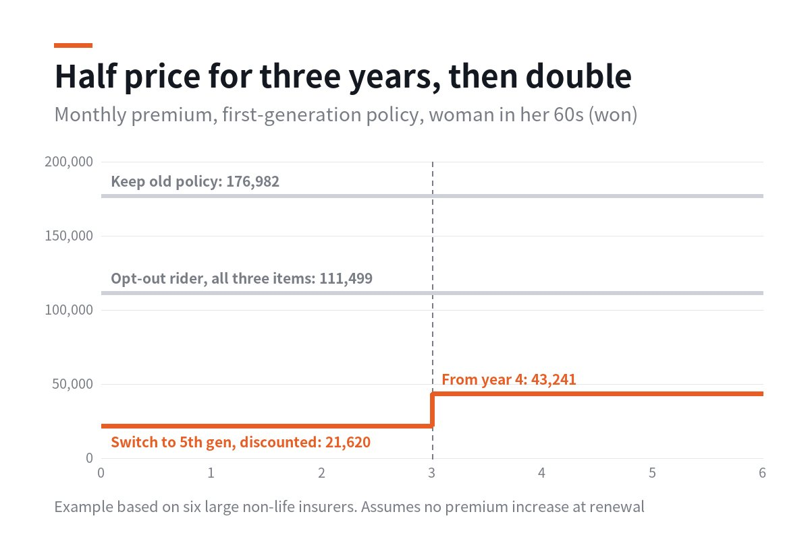

HOLT NEWS, Kinh tế và thương mại Hàn Quốc
Kinh tế hôm nay: Việt Nam và Hàn Quốc
Biểu đồ: diễn biến 1 năm qua
Chủ tịch Fed New York nêu nhu cầu chip AI, xuất khẩu chip Hàn Quốc tính theo kg tăng 2,7 lần
Chủ tịch Ngân hàng Dự trữ Liên bang New York John Williams ngày 23/11 nói lạm phát Mỹ "đơn giản là quá cao" và nêu nhu cầu chip và hàng hóa từ đầu tư AI là một trong ba nguyên nhân. Theo số liệu hải quan Hàn Quốc, giá trị xuất khẩu vi mạch của Hàn Quốc tính trên mỗi kg đã tăng 2,75 lần trong một năm. Việt Nam là một trong những nơi mua nhiều nhất.

Hàn Quốc buộc doanh nghiệp lớn công khai hồ sơ an toàn, kể cả số lao động nhà thầu phụ tử vong
Doanh nghiệp có từ 500 lao động thường xuyên trở lên, công ty xây dựng có khối lượng công trình lớn và cơ quan công ở Hàn Quốc phải công khai tình hình an toàn và sức khỏe lao động trước ngày 30/4 hằng năm; theo quy định hiện hành, hạn đầu tiên là 30/4/2027. Doanh nghiệp có dùng nhà thầu phụ còn phải ghi số lao động nhà thầu phụ tử vong do tai nạn tại cơ sở của mình. Không công khai bị phạt hành chính tối đa 10 triệu won (khoảng 7.400 USD).

Kakao Pay và Toss bắt đầu kiểm tra thẻ căn cước Hàn Quốc qua hệ thống chính phủ
Bộ Hành chính và An toàn Hàn Quốc cho biết từ ngày 23/11, Kakao Pay và Toss kiểm tra thẻ căn cước công dân (주민등록증) của khách hàng qua hệ thống chính phủ, kể cả thông tin ảnh. Naver Pay dự kiến bắt đầu trong tháng 12. Thông báo chỉ nói về thẻ căn cước công dân. Ai muốn chặn trước việc người khác dùng tên mình để vay hay mở tài khoản trực tuyến có thể tự đăng ký dịch vụ “chặn an toàn”.

Hàn Quốc cho thêm 3 năm để chuyển bảo hiểm tiết kiệm đáo hạn thành lương hưu, sớm nhất 86 tuổi rưỡi mới nhận vượt 100 triệu won
Từ ngày 1/12, các công ty bảo hiểm nhân thọ Hàn Quốc nhận đơn chuyển tiền đáo hạn của bảo hiểm tiết kiệm thành niên kim trong vòng 3 năm sau ngày đáo hạn, nếu hợp đồng có điều khoản chuyển đổi niên kim và khách chưa rút tiền. Cộng dồn mức niên kim hằng tháng trong ví dụ của Cơ quan Giám sát Tài chính mà không tính lãi, một người đàn ông 65 tuổi chọn niên kim trọn đời bảo đảm 10 năm phải nhận đến 86 tuổi rưỡi thì tổng mới vượt 100 triệu won.

KOSPI mất 48% so với đỉnh, Hàn Quốc chuẩn bị quỹ bình ổn thị trường chứng khoán và nới trần mua lại cổ phiếu
Ngày 23/11, KOSPI đóng cửa ở 4.708,54 điểm, thấp hơn 48% so với mức đóng cửa kỷ lục ngày 22/6. Từ 24/11, doanh nghiệp niêm yết được đặt lệnh mua lại toàn bộ số cổ phiếu đã đăng ký trong một ngày, và chính phủ đang chuẩn bị quỹ bình ổn thị trường chứng khoán. Phương án năm 2020 có quy mô 10,7 nghìn tỷ won; lần này chưa công bố quy mô và điều kiện kích hoạt.

Cước container từ Hàn Quốc đi bờ Tây Mỹ tăng 82%, tuyến đi Việt Nam gần như đứng yên
Ngày Hàn Quốc công bố xuất khẩu 1-20/11 tăng gấp đôi, chúng tôi xem số liệu phía tàu biển. Theo cước khai báo với Tổng cục Hải quan Hàn Quốc, cước container 40 feet từ Hàn Quốc đi bờ Tây Mỹ tháng 10 cao hơn cùng kỳ 82%, đi EU cao hơn 48%. Tuyến đi Việt Nam chỉ tăng 1,8%. Từ tháng 6 đến tháng 10, container có hàng đi Mỹ tăng 17%, đi EU tăng 70%.

Nhập khẩu Hàn Quốc tăng 39% trong 20 ngày đầu tháng 11: phần tăng chủ yếu là chip và năng lượng
Theo số liệu sơ bộ của Hải quan Hàn Quốc, trong 20 ngày đầu tháng 11 nước này nhập khẩu 50,3 tỷ USD, nhiều hơn cùng kỳ năm trước 14,2 tỷ USD. Bốn mặt hàng là chip, dầu thô, khí và thiết bị sản xuất chip chiếm 69% mức tăng. Phần còn lại tăng 17,6%. Nhập khẩu từ Việt Nam đạt 2,33 tỷ USD, tăng 26,9%.

Xuất khẩu Hàn Quốc tăng gấp đôi trong 20 ngày đầu tháng 11, nhưng lượng hàng năm nay lại nhẹ hơn
Theo số liệu sơ bộ của Tổng cục Hải quan Hàn Quốc, từ ngày 1 đến 20/11 nước này xuất khẩu 77,4 tỷ USD, gấp đôi một năm trước; riêng sang Việt Nam đạt 6,51 tỷ USD, tăng 85,8%. Nhưng tính đến ngày 19/11, trọng lượng hàng Hàn Quốc xuất đi trong năm nay giảm 4,9% so với cùng kỳ.

Hàn Quốc sắp có công cụ tìm tiền bảo hiểm y tế chưa yêu cầu, nhưng một số hóa đơn sẽ hết hạn 3 năm trước đó
Ủy ban Tài chính Hàn Quốc cho biết trong quý 1 năm 2027 sẽ đưa chức năng tìm tiền bảo hiểm chưa yêu cầu vào ứng dụng Silson24. Nhưng tiền bảo hiểm silson không còn đòi được sau 3 năm, nên có những lần khám sẽ hết hạn trước khi công cụ ra mắt. Bài này cho biết hạn rơi vào ngày nào và ngay bây giờ có thể tự tra ở đâu.

Xe sản xuất tại Trung Quốc vượt xe Đức về giá trị nhập khẩu vào Hàn Quốc, 92% là xe điện
Trong 10 tháng đầu năm 2026, Hàn Quốc nhập 4,22 tỷ USD ô tô con sản xuất tại Trung Quốc, nhỉnh hơn mức 4,19 tỷ USD của xe sản xuất tại Đức. 92,0% số xe từ Trung Quốc là xe thuần điện. Hiệp định thương mại tự do Hàn Quốc - Trung Quốc không giảm thuế cho ô tô.

Big Mac ở Pakistan và Hàn Quốc gần bằng giá nhau, ở Việt Nam rẻ hơn nhưng nặng túi hơn Hàn Quốc
Trong chỉ số Big Mac tháng 7 năm 2026 của tạp chí The Economist, một chiếc Big Mac giá 3,89 USD ở Pakistan và 3,84 USD ở Hàn Quốc. Ở Việt Nam là 76.000 đồng, khoảng 2,89 USD. So với thu nhập thì gánh nặng ở ba nước khác nhau rất xa.

Xăng dầu Hàn Quốc sang Việt Nam: lượng giảm 12%, giá mỗi tấn tăng 86%
Theo tính toán từ số liệu của Cục Hải quan Hàn Quốc, từ tháng 3 đến tháng 10/2026 Hàn Quốc xuất sang Việt Nam 1,92 triệu tấn sản phẩm dầu mỏ, ít hơn 12,0% so với cùng kỳ năm trước, nhưng kim ngạch tăng 63,3% lên 2,35 tỷ USD. Giá xuất khẩu bình quân mỗi tấn tăng từ 659 USD lên 1.223 USD. Từ tháng 3, Seoul giới hạn xuất khẩu xăng, dầu diesel và dầu hỏa ở mức của cùng tháng năm trước, và từ tháng 11 nới riêng cho dầu diesel lên 110% kèm điều kiện.

Hàn Quốc giảm nửa phí 3 năm cho người đổi bảo hiểm y tế cũ sang thế hệ 5, từ năm thứ tư phí tăng gấp đôi
Từ ngày 23/11, người có bảo hiểm silson Hàn Quốc mua trước tháng 3/2013 và không kèm điều kiện tái tham gia có thể đổi sang thế hệ 5 và chỉ đóng một nửa phí trong 3 năm. Hết giảm giá thì phí là bao nhiêu, giữ hợp đồng cũ mỗi năm tốn thêm bao nhiêu, và khi nào ưu đãi bị cắt? Chúng tôi đã tính thử.

Hàng chuyển tải ở Busan tăng 20% trong quý III, còn Incheon là cửa ngõ gần Việt Nam
Từ tháng 7 đến tháng 9/2026, cảng Busan xếp dỡ 6,77 triệu TEU, trong đó sáu phần mười là hàng của nước khác đổi tàu tại đây. Bộ Hải dương và Thủy sản Hàn Quốc cho biết bão làm các cảng Trung Quốc ùn tắc nên nhiều tàu ghé Busan hơn. Trên tuyến giữa Hàn Quốc và Việt Nam, Busan chỉ chiếm hơn một nửa; cảng Incheon gần Seoul nhận gần ba phần mười container từ Việt Nam.

Dự luật lương tối thiểu 25 USD ở Mỹ có hai bản, chỉ bản của Thượng viện coi 25 USD là mức sàn
Dự luật lương tối thiểu 25 USD của đảng Dân chủ, Đạo luật Lương đủ sống cho mọi người, có bản Hạ viện và bản Thượng viện thường bị coi là một. Thật ra không phải. Bản Hạ viện chặn lương tối thiểu ở mức hai phần ba lương giờ trung vị, tức khoảng 16 USD theo mức trung vị hiện nay.

Mì Hàn Quốc sang Việt Nam tăng 20%; rong biển sang Việt Nam nhiều hơn nhưng rẻ đi
Tính từ số liệu của Cục Hải quan Hàn Quốc, trong 12 tháng đến tháng 10/2026, Hàn Quốc xuất khẩu 1,98 tỷ USD mì ăn liền và các loại mì (mã HS 190230), tăng 24,4%. Hàng sang Việt Nam đạt 29,86 triệu USD, tăng 20,0%. Rong biển sang Việt Nam tăng 19,0% về khối lượng, trong khi giá bình quân mỗi kg giảm 5,6%.

Nhật Bản ngày càng nhiều khoản vay mua nhà 50 năm, Hàn Quốc giới hạn 30 năm ở vùng thủ đô
Trong khảo sát của Cơ quan Tài chính Nhà ở Nhật Bản, hơn một nửa số tổ chức tín dụng trả lời cho vay lãi suất thả nổi với kỳ hạn tối đa 50 năm. Cơ quan Dịch vụ Tài chính Nhật Bản (FSA) nói trong phương hướng quản lý tháng 9/2026 rằng sẽ theo dõi xem các khoản vay này có phù hợp với triển vọng thu nhập của người vay hay không. Hàn Quốc làm ngược lại: từ tháng 6/2025, kỳ hạn vay mua nhà ở vùng thủ đô Seoul và các khu vực bị kiểm soát không được quá 30 năm.

Lỡ hạn tháng 5? Vẫn xin được tiền khuyến khích lao động ở Hàn Quốc đến 1/12, nhận 95%
Cơ quan Thuế quốc gia Hàn Quốc đã gửi thông báo cho 260.000 hộ đủ hoặc có thể đủ điều kiện nhận tiền khuyến khích lao động và tiền khuyến khích nuôi con cho thu nhập năm 2025 nhưng chưa nộp đơn. Nộp muộn trước ngày 1/12 thì nhận 95% số tiền, chuyển vào ngày 15/1/2027. Người nước ngoài kết hôn với người Hàn hoặc có con mang quốc tịch Hàn cũng có thể thuộc diện này.

Amazon và United chặn trợ lý AI mua hàng, Walmart lại cho AI tự mua trong hạn mức
United Airlines, Amazon, JPMorgan và eBay không cho trợ lý AI của khách hàng mua thay, còn Walmart và Shopify mở cửa nhưng đặt giới hạn. Đằng sau là hai câu hỏi: ai giữ được khách hàng, và ai trả tiền khi AI mua nhầm.

Mỹ vượt Trung Quốc thành thị trường lớn nhất của mỹ phẩm dưỡng da Hàn Quốc; hàng sang Việt Nam ít đi về lượng nhưng đắt hơn
Tính từ số liệu của Cục Hải quan Hàn Quốc, trong 12 tháng đến tháng 10/2026, xuất khẩu mỹ phẩm dưỡng da của Hàn Quốc sang Mỹ tăng 39,8%, lên 2,06 tỷ USD, vượt Trung Quốc (1,63 tỷ USD, giảm 2,5%). Hàng sang Việt Nam đạt 392,4 triệu USD, tăng 9,1%, nhưng tính theo khối lượng lại giảm 3,2%: giá bình quân mỗi kg tăng 12,7%, lên 31,03 USD.

Thuế 301 của Mỹ: cùng là 12,5%, vì sao hàng Việt Nam chịu thuế cao hơn hàng Hàn Quốc
Từ ngày 24/7/2026, Mỹ áp thuế theo Mục 301 lên hàng hóa của hàng chục nền kinh tế. Hàng Việt Nam và Thái Lan phải nộp thêm 12,5% trên mức thuế thông thường, còn hàng Hàn Quốc có thuế thấp hơn 12,5% chỉ được nâng lên tổng cộng 12,5%. Với mì ăn liền (thuế thông thường 6,4%), hàng Việt Nam chịu 18,9%, hàng Hàn Quốc 12,5% (khi chưa khai ưu đãi KORUS).

Giá dầu thế giới đã giảm, sao mức trần giá xăng ở Hàn Quốc vẫn đứng yên
Hàn Quốc giữ mức trần giá xăng mà nhà máy lọc dầu bán cho cây xăng ở 1.784 won một lít (khoảng 34.250 đồng), lần thứ sáu liên tiếp, áp dụng đến ngày 11/12. Dầu Brent đã thấp hơn mức trung bình tháng 10, nhưng vẫn cao hơn khoảng một phần ba so với lúc đặt mức trần cuối tháng 6. Phần chi phí vượt trần do nhà máy lọc dầu gánh trước, Chính phủ hứa bù theo quý, tính trên chi phí thực.

Hàn Quốc áp thuế chống bán phá giá thép Trung Quốc: thép cán nóng Việt Nam vào Hàn Quốc tăng 8,1 lần
Từ tháng 1 đến tháng 10/2026, Hàn Quốc nhập thép cán nóng từ Trung Quốc ít hơn 77% so với cùng kỳ, sau khi áp thuế chống bán phá giá. Thép cán nóng từ Việt Nam tăng từ 15 nghìn tấn lên 123 nghìn tấn. Nhật Bản chiếm 65% lượng nhập khẩu, còn thép cán nguội và phôi thép Trung Quốc, không bị áp thuế, lại tăng 58% và 88%.

Xuất khẩu Hàn Quốc sắp vượt 1.000 tỷ USD một năm, Việt Nam là thị trường lớn thứ ba
Tính đến ngày 10/11, xuất khẩu hàng hóa của Hàn Quốc năm nay đã đạt 963,7 tỷ USD. Với tốc độ hiện nay, con số này sẽ vượt 1.000 tỷ USD vào khoảng ngày 19–20/11, đưa Hàn Quốc thành nước thứ tư trên thế giới làm được điều này, sau Mỹ, Đức và Trung Quốc. Trong 10 tháng đầu năm, Hàn Quốc xuất sang Việt Nam 80 tỷ USD, tăng 56,6%. Những năm 1960–1970, Hàn Quốc từng xuất khẩu sóc chuột hoang và nước tiểu thu gom từ nhà vệ sinh công cộng. Bài viết dùng số liệu hải quan để so sánh hai thời kỳ.

Cước tàu Việt Nam, Hàn Quốc gần như không đổi, trong khi tuyến Mỹ và Trung Quốc lệch hẳn
Theo số liệu cước biển mà Cục Hải quan Hàn Quốc tổng hợp từ tờ khai xuất nhập khẩu, tháng 10/2026 cước một container 40 feet từ Việt Nam sang Hàn Quốc bằng 78% cước chiều Hàn Quốc, Việt Nam, gần như không đổi so với mức 79% một năm trước. Trong khi đó, cước từ bờ Tây nước Mỹ về Hàn Quốc chỉ còn 24% chiều ngược lại, còn cước từ Trung Quốc sang Hàn Quốc cao gấp 3,7 lần.

Một lần bấm "Cho phép", Meta bị phạt 805 triệu euro. Vì sao Ý ra tay chứ không phải Ireland?
Ngày 14/11, cơ quan bảo vệ dữ liệu Ý phạt Meta 805 triệu euro (khoảng 22.760 tỷ đồng). Theo cơ quan này, ứng dụng Facebook trên Android đã đọc thư viện ảnh của người dùng Ý mà không xin sự đồng ý riêng cho tính năng đó. Trụ sở châu Âu của Meta đặt ở Ireland, vậy mà lần này Ý tự xử lý được. Cùng sự việc ấy, nếu xét theo luật Hàn Quốc thì sẽ rẽ thành hai đường.

Lần đầu tiên hơn một nửa người làm công ăn lương ở Hàn Quốc nhận từ 3 triệu won mỗi tháng
3 triệu won là khoảng 57,6 triệu đồng. Nhóm nhận từ 5 triệu won (khoảng 96 triệu đồng) cũng lên 17,6%, cao nhất trong các kỳ khảo sát nửa đầu năm. Nhưng số người nhận dưới 1 triệu won cũng tăng, và chênh lệch giữa các ngành rất lớn.

What is a chaebol? Samsung, Hyundai and Korea's family-run business groups explained
Korea's antitrust regulator lists 102 business groups with at least 5 trillion won (about $3.7 billion) in assets, led by Samsung. In the 89 that have a controlling person, usually a family, the family directly owns 3.5% of member companies' shares on a capital-weighted average. Counting the group's own companies, insiders hold 61.4%.

Korea's wrap accounts have no legal single-stock cap, FSS warns, after a client ended up 90% in high-risk KOSDAQ shares
Korea's financial watchdog on Nov. 16 published complaints about brokerage wrap accounts, where clients hand stock-picking to the broker. Unlike mutual funds, these accounts have no legal single-stock limit, and exit fees and capital gains tax on overseas shares have caught some investors out.

Fed Financial Stability Report flags AI data center debt and off-balance-sheet commitments
The Federal Reserve's November 13 Financial Stability Report sets out how AI data centers are being financed. Debt issued for advanced computing passed $680 billion this year, and seven big tech firms have more than $3 trillion, undiscounted, in leases, guarantees and other commitments that sit off their balance sheets. Each figure measures something different.

Does the Korea-China FTA services deal end China's hallyu ban? Not quite
China pledged to treat Korean films and games no worse than any other country's, but its content screening stays in place. None of it applies until the deal is signed and in force, which took about 13 months last time.

Brazil, Australia and Spain gain share of Korea's chicken, beef and pork imports
Over the past 12 months Brazil supplied 80% of Korea's chicken-cut imports by value, up from 71%, while Thailand fell to 16%. Australia gained in frozen beef even though US beef became duty-free in January, and Spain overtook the US in frozen pork import value despite a higher average price per kilogram. Our calculations from Korea Customs Service data.

Korea's main mortgage rate index hits 3.62%, its highest in two years and eight months
The cost-of-funds index most widely used for Korean variable-rate mortgages rose to 3.62% in October, its highest in two years and eight months. A sister index published the same day sits at 2.93%. The gap between them is the widest since early 2023, and which one a loan tracks decides how fast the borrower's payment climbs.
Dữ liệu: Vietcombank · Cục Hải quan Hàn Quốc · Ngân hàng Trung ương Hàn Quốc · Cục Thống kê Hàn Quốc · Ngân hàng Xuất nhập khẩu Hàn Quốc